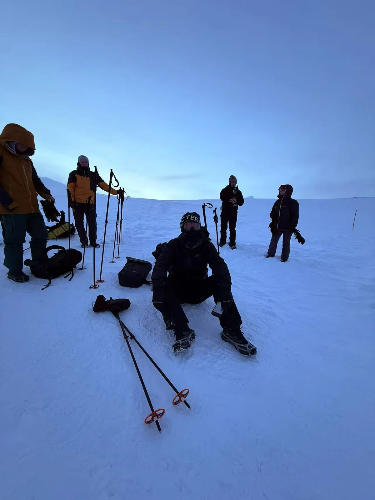
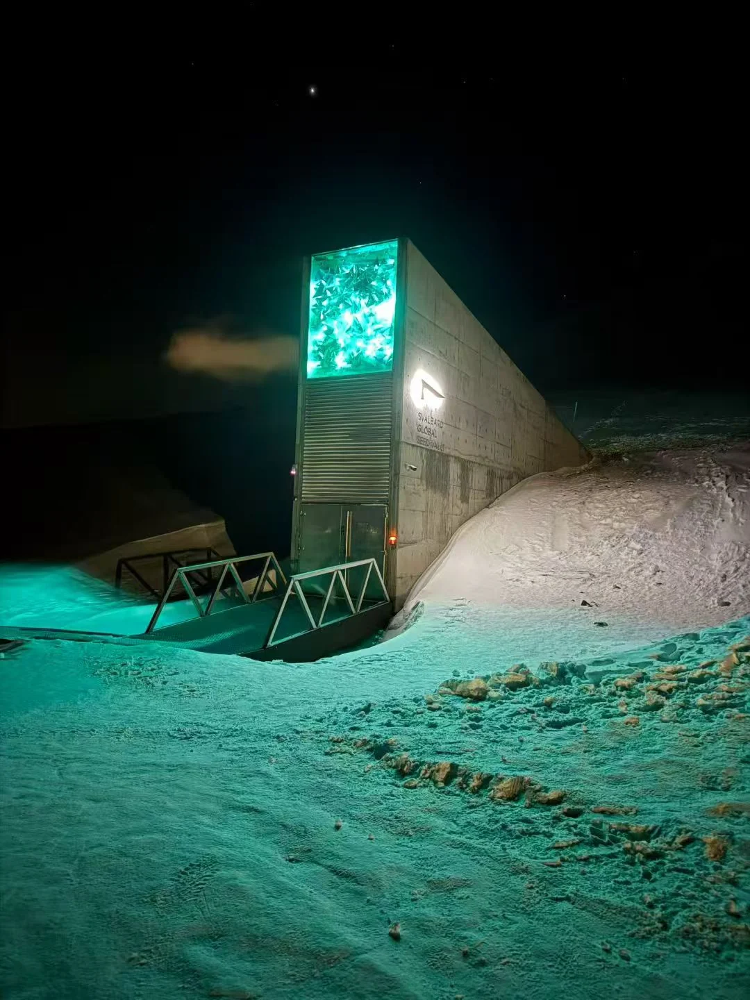
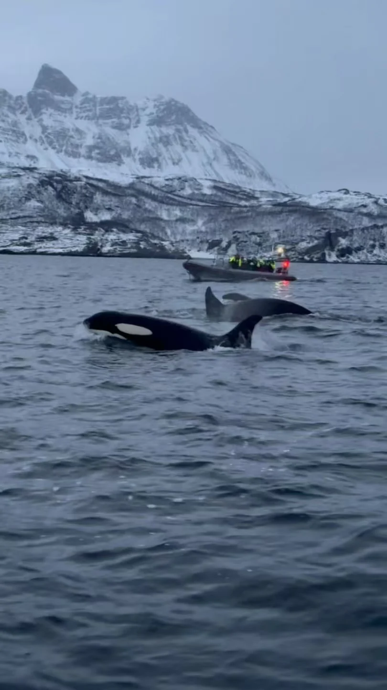

OPPO
AI 产品经理实习生让 AI 问数更可靠，
让开发者服务更完整。
参与游戏开放平台的 AI 问数迭代，围绕意图识别、数据查询和分析生成，完善 Agent 工作流与反馈闭环。
- 梳理问数指标、异常提示与用户反馈，让回答有边界、问题可追踪。
- 结合 MCP 与 Skill 串联数据提取、分析和周报生成，并参与个人开发者生态规划。
从用户研究与商业分析，
走向策略产品和 AI 产品。
参与游戏开放平台的 AI 问数迭代，围绕意图识别、数据查询和分析生成，完善 Agent 工作流与反馈闭环。
围绕 CPS 成交漏报与营销活动风控，完成 SQL 分析、分层策略、PRD 和效果复盘，推动识别机制进入实际业务流程。
参与滴滴出行等用户研究项目，梳理认知、选择与使用路径，识别价格、安全和服务体验三类核心痛点。
研究、咨询与财务，
构成我的商业分析底色。
跟踪建筑建材行业与 30+ 家公司，参与公司点评、深度报告及模型分析。
参与新能源资产优化与欧洲市场进入研究，搭建分析框架并输出市场策略建议。
参与财务数据核对、台账维护与报销流程梳理，整理标准化表格和流程材料。
会计 · 理学硕士
会计与金融 · 理学学士
伯明翰大学专业第一 · 校级一等奖学金
托福 104 · ACCA 已通过 7 门
用户研究、需求分析、竞品分析与业务拆解
用户深访 / XMindPRD、流程设计、原型设计与数据验证
Figma / Axure / SQL / ExcelPrompt、Agent 流程、知识库与工具连接
Codex / Cursor / MCP / Skill个人项目 · 2026.01 — 2026.03
把零散素材，整理成可追溯的需求包。
围绕信息抽取、澄清追问与结构化输出，完成产品设计、Moonshot API 接入和异常交互验证。
在欧洲、亚太与北美留下的 22 个站点。
旅行让我换一个角度，观察人与生活。
从世界最北面的城市开始。
斯瓦尔巴的雪夜、特罗姆瑟的峡湾、爱琴海的沉船湾——
这些是只有我自己能带回来的画面。



移动到落点附近，再选择击球方式。
桌面：鼠标 / WASD / 方向键 · 点击球场或空格击球
手机：按住方向键移动 + 击球按钮
它负责提醒我：高效之外，还有散步、零食和毫无理由的快乐。
它正在观察你。
期待新的工作机会，也期待有趣的交流。
手机 / 微信：18852356108
页面以 Three.js 构建自然空间，参考 ThreeUI Sylva 的自然场景与 Halvorsen 的编辑排版。内容来自个人简历，个人项目与实习经历分别呈现。
真实旅行地点图像来自 Wikimedia Commons，并保留作者、许可证和原始页面。实习成果的适用场景在对应经历中注明；测算收益与已实现结果分别表述。
“生活切片”章节中的 3D 小狗由 Blender 工作流接入：先用 Poly by Google 的 CC BY 3.0 “Puppy” 模型跑通 GLTFLoader，后续计划用 Blender 自建一只白色比熊，烘焙贴图后替换 glb。